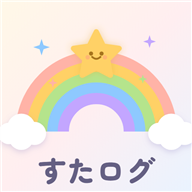

すたログ
科目をえらんで、▶ おすだけ。
受験勉強・テスト勉強・資格勉強のおともに。
勉強時間が、グラフで見える無料タイマー
無料
登録不要
インストール不要
とにかく、シンプル。
むずかしい設定はなし。開いたら10秒で計測スタート。
国語
数学
英語
理科
社会
00:25:41
きょうの記録は、時系列。
上から順番に、勉強手帳や日記へそのまま書き写せる。
16:00
16:45
数学
青チャート p.34〜
45分
17:00
17:30
英語
単語 No.100-150
30分
21:00
21:40
理科
ワーク p.12
40分
過去の記録は、グラフ。
科目の割合も、毎日の量も、ひと目でわかる。
数学 35%
英語 25%
国語 20%
理科 12%
社会 8%
だれにでも、見やすい色で。
カラーユニバーサルデザイン対応。色の見え方がちがう人にも見分けやすい配色に切りかえOK。
受験にも、テストにも、資格にも。
どんな勉強にもフィットします。
受験勉強
テスト勉強
資格の勉強
高校・大学受験の毎日の積み上げ、定期テスト前の追い込み、社会人の資格勉強まで。科目は自由に追加できるから、簿記もプログラミングも、自分だけの勉強記録がつくれます。
ホーム画面に置けば、アプリに。
アプリストアは不要。3ステップで毎日使える。
下のボタンから、すたログを開く
iPhone: 共有ボタン →「ホーム画面に追加」
Android: メニュー(⋮)→「アプリをインストール」
にじのアイコン🌈から、いつでもスタート!